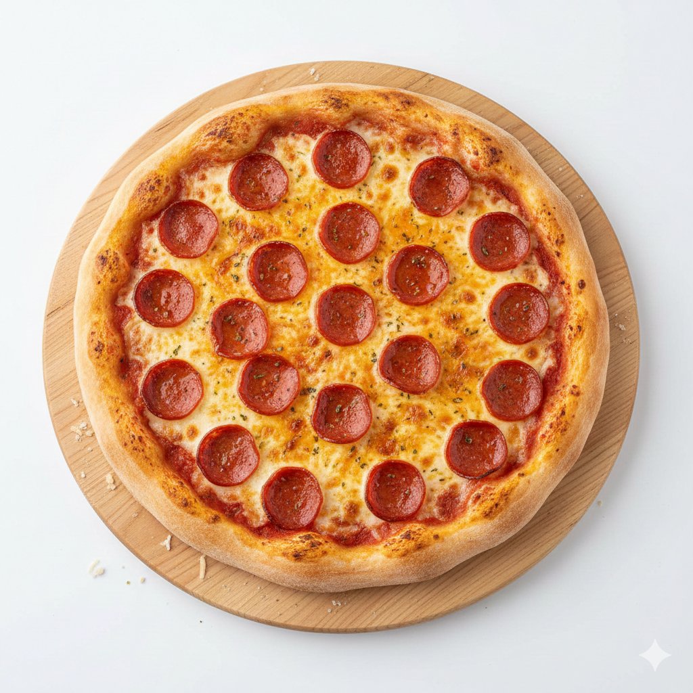

This recipe is perfect for a quick and customizable dinner!
Ingredients List
- 1 pre-made pizza crust (store-bought, about 10-12 inches)
- 1/2 cup pizza sauce (canned or jarred)
- 1 cup shredded mozzarella cheese
- 1/2 teaspoon dried Italian seasoning
- 1/4 cup sliced pepperoni (or your favorite toppings like mushrooms, peppers, etc.)
- 1 tablespoon olive oil (optional, for brushing crust)
Instructions
- Preheat and Prep: Preheat your oven to 425°F (220°C). Place the pre-made pizza crust on a baking sheet or a pizza stone. If desired, lightly brush the edges of the crust with 1 tablespoon of olive oil for extra crispiness.
- Sauce it Up: Spoon the 1/2 cup of pizza sauce onto the center of the crust. Use the back of the spoon to spread the sauce evenly, leaving about a 1/2-inch border for the crust.
- Season and Cheese: Sprinkle the entire sauced area with the 1/2 teaspoon of dried Italian seasoning. Next, evenly distribute the 1 cup of shredded mozzarella cheese over the sauce.
- Add Toppings: Scatter the 1/4 cup of sliced pepperoni (or your chosen toppings) across the top of the cheese. Make sure they are evenly spread for consistent cooking.
- Bake: Carefully place the baking sheet or pizza stone into the preheated oven. Bake for 10-15 minutes, or until the crust is golden brown and the cheese is melted and bubbly.
- Cool and Serve:Remove the pizza from the oven and let it cool for 3-5 minutes before slicing. This helps the cheese set. Slice the pizza and enjoy!